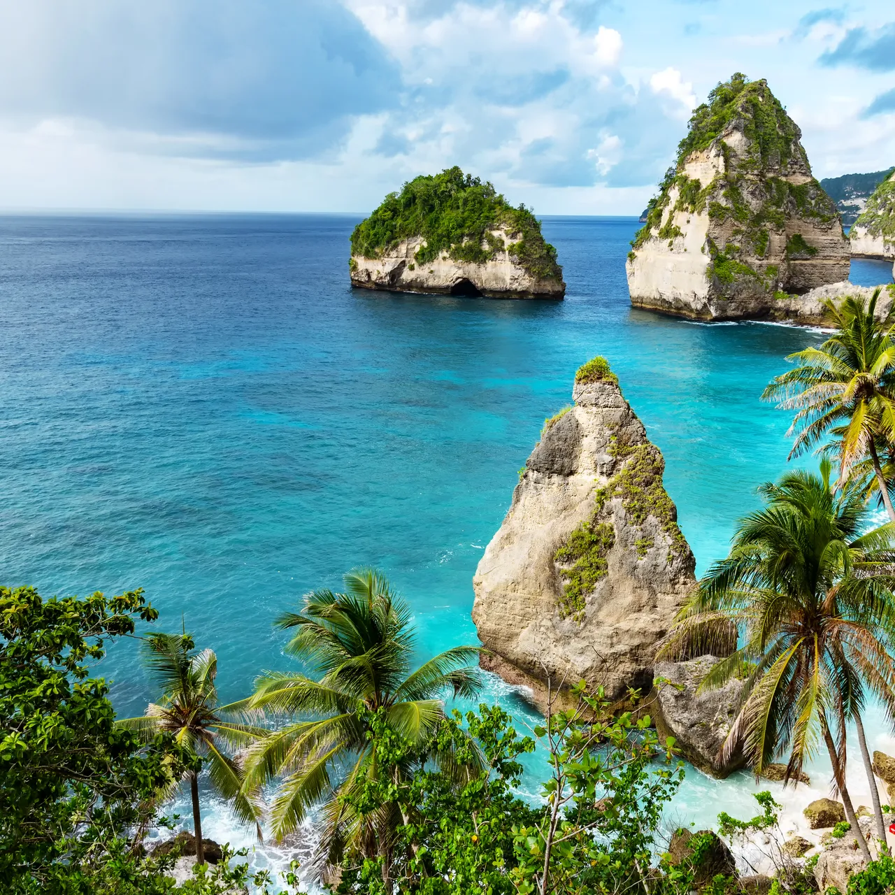

מסע בין חמישה מקומות מדהימים בעולם
פרטי המקום
אטרקציות מומלצות
|
באלי – אי האלים והשלווה באלי הוא מקום שמרגיש אחר לגמרי מכל מקום אחר בעולם. האי שורץ מקדשים עתיקים, שדות אורז ירוקים מרהיבים ואנשים בעלי נפש קסומה. כבר בדקות הראשונות לאחר הנחיתה הרגשתי שלווה עמוקה שעטפה אותי מכל עבר. ביקרתי במקדשות המפוארות של Tanah Lot בשקיעה, טיפסתי על הר הגעש Batur בשעות הבוקר המוקדמות כדי לצפות בזריחה, ובילתי ימים שלמים בשדות האורז הירוקים של Tegalalang. האוכל הבאלינזי, המוזיקה המסורתית והחמימות של התושבים המקומיים הפכו את הביקור לבלתי נשכח לחלוטין. |